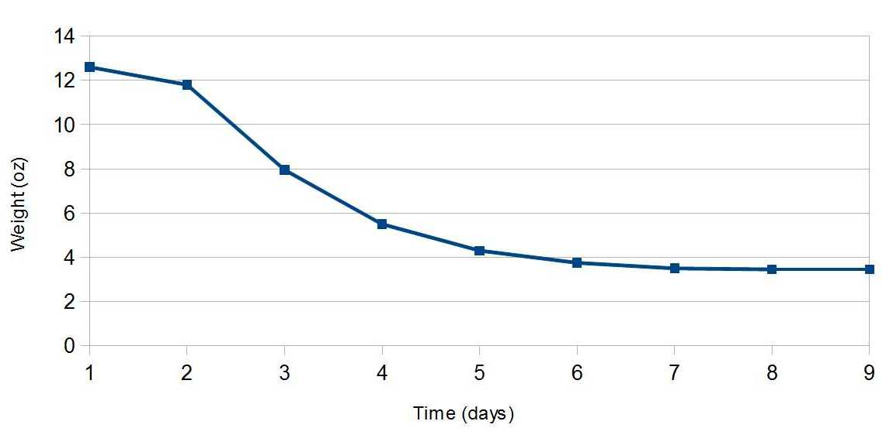

Summary
The table below lists the results of each year, variety, and analysis date. Below that is a summary of each year's efforts.
| year | variety | harvest weight | dry weight | harvest date | analysis date | moisture | HSI | alpha acids | beta acids | cohum. | colup. |
| 2014 | Cascade | 63 oz (1.8 kg) |
14.5 oz (411 g) |
Sep. 1, 2014 | Dec. 11, 2014 | 8.8% | N/A | 7.37% | 6.96% | 33.2% | 51.7% |
| 2014 | Cascade | Sep. 1, 2014 | Oct. 16, 2015 | 9.1% | N/A | 6.13% | 5.08% | 31.9% | 50.1% | ||
| 2015 | Cascade | 56.1 oz (1.6 kg) |
13.9 oz (394 g) |
Sep. 13, 2015 | Oct. 16, 2015 | 6.20% | N/A | 6.64% | 5.38% | 33.7% | 52.7% |
| 2016 | Cascade | 61.75 oz (1.8 kg) |
14.2 oz (403 g) |
Sep. 4, 2016 | Sep. 2016 | Lab1: 9.03% | Lab2: 0.217 | Lab1: 8.33% Lab2: 9.0% |
Lab1: 7.20% Lab2: 7.5% |
Lab1: 32.6% | Lab1: 52.0% |
| 2017 | Cascade | 46.80 oz (1.3 kg) |
10.70 oz (303 g) |
Sep. 10, 2017 | Sep. 2017 | Lab1: 7.60% | Lab2: 0.216 | Lab1: 6.89% Lab2: 8.5% |
Lab1: 5.64% Lab2: 6.2% |
Lab1: 34.6% | Lab1: 50.6% |
| 2018 | Cascade | 56.35 oz (1.6 kg) |
15.5 oz (439 g) |
Sep. 2, 2018 | Dec. 21, 2018 | 24.3% | 0.20 | 7.05% | 5.66% | 34.8% | 51.3% |
| 2019 | Cascade | 16.35 oz (0.46 kg) |
3.90 oz (110 g) |
Sep. 2, 2019 | Sep. 10, 2019 | 13.0% | 0.21 | 7.15% | 5.90% | 36.2% | 54.2% |
| 2019 | Teamaker | 20.10 oz (0.57 kg) |
5.10 oz (145 g) |
Sep. 1, 2019 | Sep. 10, 2019 | 12.9% | 0.18 | 0.41% | 11.93% | 85.0% | 44.6% |
| 2020 | Cascade | 16.75 oz (0.47 kg) |
3.20 oz (91 g) |
Sep. 6, 2020 | Sep. 12, 2020 | 7.1% | 0.26 | 8.02% | 6.90% | 34.6% | 52.6% |
| 2020 | Cashmere | 11.30 oz (0.32 kg) |
3.30 oz (94 g) |
Aug. 31, 2020 | Sep. 12, 2020 | 9.5% | 0.27 | 7.01% | 5.12% | 24.1% | 42.6% |
| 2020 | Teamaker | ~44 oz (1.25 kg) |
11.05 oz (313 g) |
Aug. 30, 2020 | Sep. 12, 2020 | 10.2% | 0.27 | 0.58% | 10.95% | 90.7% | 42.1% |
| 2021 | Comet | 45.0 oz (1.275 kg) |
10.94 oz (310 g) |
Sep. 6, 2021 | Sep. 13, 2021 | 8.4% | 0.28 | 9.00% | 4.97% | 36.9% | 61.2% |
2014
This was my third year of growing one Cascade plant, and my first year of growing four Willamettes and four additional Cascades on trellises. I harvested the older Cascade during the first weekend in September, when the cones were papery and some were starting to turn brown on the edges. (Some sites suggest harvesting periodically, but I'm not convinced that it's worth the extra hassle.) That plant yielded 63 oz (3.94 lbs or 1.8 kg) of fresh hops. I dried them in the basement, which is cool but convenient for me, using several fans to circulate the air. I put them in several mesh bags or on a mesh sweater hanger. It took them 9 days to fully dry out; I decided they were done when one day's weight was the same as the previous day's weight. The dried hops weighed 14.5 oz (411 g). According to Greg Noonan in New Brewing Lager Beer (p. 79), "[hops] contain 70 to 80 percent moisture at harvesting, [and] are dried to 8 to 10 percent moisture". In early December, I sent 1¼ oz (35 g) of the older Cascade hops and $35 off to KAR laboratories (no longer available) to get them tested. The results came back showing 8.76% moisture and an alpha acid level of 7.37%. With 8.76% moisture remaining, if I do the math correctly that would mean that the hops were 79% moisture at harvesting, which is in line with Noonan's values, although a bit high.
Here's a graph of the decrease in weight, per day:
 Weight of hops over time
They probably would have dried much faster if they were in a warmer environment (the basement is a fairly steady 70°F/21°C in the summer) or if I had been able to spread them out better. I've heard that a door screen works very well for spreading them out. According to Noonan in New Brewing Lager Beer (p. 79), commercial hops are dried at ~140°F (60°C) for 8 to 12 hours, and then "cured in cooling bins" for 5 to 10 days, so it seems that a 9-day drying time at room temperature is a reasonable approach that yields similar results (at least in terms of moisture content).
The second weekend in September, I harvested the first-year plants. The four Willamette plants yielded a total of 4.55 oz (129 g) of fresh hops this first year (about 1 oz or 32 g per plant). They were dry within 6 days using the same method as with the Cascade, presumably due to the cones being less densely packed. The dried weight was 1.10 oz (31 g), indicating that the fresh weight was 78% moisture (assuming they were also ~9% moisture when dried).
The four new Cascade plants provide a cautionary tale. I harvested 11.05 oz (313 g) of fresh hops from the four plants, but there were a number of ants crawling around the bines and cones. I let the plastic bucket of harvested hops sit out overnight, hoping that the ants would go away. In the morning, the rim of the bucket and all of the hops were covered with many hundreds, possibly thousands, of tiny, pale-green aphids. I had no idea that they could detect and converge on hops that quickly. The lesson here: spread diatomaceous earth at the base of the plants so that ants won't be crawling on the hops. If I hadn't had the ants in the first place, and then left the bucket out to get rid of the ants, the aphids wouldn't have had a chance to find my hoppy treats. (The Cascade plant that is now in its third year had, in its first year, a number of aphids on the underside of the leaves, and it looked like ants were farming the aphids. I spread diatomaceous earth at the base of the plant and released many, many ladybugs, and by harvest time the ants and aphids were gone. The second and third years, diatomaceous earth applied at the beginning of the season prevented ants and aphids alike.)
The dried hops were put in vacuum-sealed bags and stored in a chest freezer.
In October 2015, I sent off another sample of the 2014 batch of Cascade to KAR Laboratories, and it came back with 6.13% alpha acids. The hops were kept in what I believe are close to optimal conditions. So, to the extent that the measured AA values are correct, even under great storage conditions, the AA level after one year was only 83% of the initial value.
2015
The 2014-2015 winter and the summer of 2015 were warm and dry here in Portland, Oregon. I think this is why all plants had a lower yield this year. The Willamettes, in particular, yielded only 64 cones, not even enough worth drying. In a Willamette Week article that interviewed hop farmer Patrick Leavy, Leavy says that "when you have a warm winter, certain varieties like Willamette don't get enough 'chilling hours,' which regulates their growth hormone." Oh, well... hopefully they put down lots of roots for next year.
I used a food dehydrator to dry the hops for 12 hours at 95°F (35°C) this year; that worked really well for me. I harvested 46.9 oz (1.3 kg) of fresh hops from the older Cascade plant and 9.18 oz (0.26 kg) from the younger Cascade plants. This yielded a total of 13.9 oz (394 g) of dry hops. In October, I sent 1¼ oz (35 g) of hops (from the older plant) and $35 off to KAR laboratories to get them tested. They came back with 6.20% moisture remaining and 6.64% alpha acids. This translates into 72% moisture at harvesting, again in line with Noonan's estimate of between 70% and 80%.
The dried hops were put in vacuum-sealed bags and stored in a chest freezer.
2016
The 2015-2016 winter was fairly mild again here in Portland. The one older Cascade plant yielded 49.75 ounces (1.4 kg) of fresh hops, pretty much in line with previous years. The hops on the trellises were kind of sad, though. The four Cascade plants from the trellises yielded only 12.0 ounces (340 g) of fresh hops, even though they're in their third year. The four Willamette plans yielded only 10 cones. It may be some sort of disease, but I'm also starting to think that because I planted them very close to the basement, and inside the basement it never gets below 60°F (16°C), the ground close to the house might be too warm for hops to put down roots in the winter. For the record, the older Cascade gets morning shade and moderate afternoon sun, the trellis plants get excellent sun in the afternoon and early evening, and all plants get 20 minutes of water each day during the summer through a soaker hose. I used the food dehydrator again, drying them for 12 hours at 95°F (35°C). With 9.03% moisture, 12 hours seems to be a good amount of drying time at this temperature.
This year, I sent samples to two laboratories that estimate alpha acid levels. I mixed the dried hops thoroughly before separating into two packages for each analysis, so that the AA numbers should be very close. The results were close, but different enough to have a large impact on IBU calculations: 8.33% from Laboratory 1 and 9.0% from Laboratory 2.
2017
The 2016-2017 winter in Portland was quite different from last year; we had a long (about 1 week to 10 day) stretch of below-freezing temperatures, which was very unusual. Then the summer was very, very hot. The yield from both older and newer plants was less than usual. Because of the cold snap, I don't think that the closeness of the newer plants to the basement is the cause of their yield being lower than the older plants. I became convinced around late August (just after a heat wave) that the newer plants were all suffering from some disease, with brownish leaves, stunted growth, and very few cones. Around early September, they somehow regenerated new growth, which was very surprising but too late for harvest. Now, I'm not sure if the problem is not enough water, too much heat and/or sunshine, or some kind of disease. At any rate, almost all of this year's harvest came from the older plant. I used the food dehydrator again, drying for 12 hours at 95°F (35°C). The moisture level of 7.60% is less than last year's 9.03%, but still a reasonable level.
Once again, I sent samples to two laboratories that estimate alpha acid levels. I mixed the dried hops thoroughly before separating into two packages for each analysis, so that the alpha-acid values should be very close. The results even more different than last year: 6.89% from Laboratory 1 and 8.5% from Laboratory 2. These differences will have a noticeable impact on predicted IBU values at higher boil times, and the reason for the discrepancy is still unclear.
2018
The yield this year was about average. All hops came from the older plant. I've officially given up on the newer plants. My hypothesis is that because the new plants get direct light from a street light for most of the night, they are unhappy. One of the Willamettes gave a good effort, but I got no hop cones from any of the eight "new" plants. This spring I planted a Willamette and a Teamaker near the Cascade. No cones from them this year, but I'm hopeful for 2019. I used a new food dehydrator and found that 12 hours at 95°F (35°C) left the cones not fully dry. I then tried about 16 hours at 105°F (40°C) and they felt dry enough, but the weight of the dry cones was still greater than I'd expect if they had fully dried. I stored them in a vacuum-sealed bag in my freezer. Both of the laboratories that I'd used in previous years no longer provide hops analysis, but I found a new lab, Advanced Analytical Research, that provides HPLC analysis, percent moisture, and HSI all at a reasonable cost. (I sent two other samples to AAR of commercially-obtained hops with a known AA rating, and both results were close to the package rating.) The moisture analysis confirmed my suspicion: at 24% moisture, they weren't as dry as they should have been. In the future, I'll continue drying the hops until the dried weight is less than 0.25 times the wet weight.
2019
The yield of Cascade this year was about ½ to ⅓ of the typical yield. There were issues with the soaker hose that waters the Cascade, so I think the low yield was due to insufficient watering. I had to transplant the Teamaker in the spring to a better location, so the low yield from that might be attributed to transplanting. Or maybe Teamaker just has much lower yield than Cascade. I used 9 trays on the food dehydrator and let it run at 105°F (40°C) for 24 hours, once for each variety. They came out feeling incredibly dry, but the moisture analysis came in at 13%, so I could have left them in for even longer. I let the Cascade sit after drying for 24 hours and there was no significant uptake of atmospheric moisture: the weight increased from 5.10 oz (144.5 g) to 5.12 oz (145.1 g), which may be entirely measurement error. Moisture, HSI, and alpha- and beta analysis were computed by Advanced Analytical Research.
2020
The yield on the Cascade plant continues to slowly decrease, for reasons that are unclear to me. It seems healthy and happy, but it doesn't grow quite as large or produce as many cones as in the past. The Teamaker hops grew tremendously, taking over most of a raised bed and growing more than 20 feet (6 meters). This was the first year for the Cashmere plant, and I was very pleased with its first-year yield. Other first-year varieties (Comet and new Willamette) didn't yield enough hops for analysis. To get closer to 10% moisture when drying, I used 9 trays on the food dehydrator and let it run at 115°F (46°C) for 24 hours, once for each variety. The moisture levels, at 7.1%, 9.5%, and 10.2%, were very close to the target. Moisture, HSI, and alpha- and beta analysis were computed by Advanced Analytical Research.
2021
As in 2020, the yield on the Cascade plant continues to slowly decrease for reasons that are unclear to me. It seems healthy and happy, but it doesn't grow quite as large or produce as many cones as in the past. I removed the Teamaker because that one was only for experimental purposes. I transplanted the Cashmere and Willamette into very large gardening pots in October 2020. Both started out well in the spring and then produced almost nothing this year. I suspect that they became rootbound. The Comet plant was the success story this year and the only one to produce enough for analysis. For drying, I used 9 trays on the food dehydrator and let it run at 120°F (46°C) for 26 hours. The moisture level, at 8.4%, was a bit below the target of 10%. (It looks like 115°F (46°C) for 24 hours is a better setting.) Moisture, HSI, and alpha- and beta analysis were computed by Advanced Analytical Research.
Navigate to:
AlchemyOverlord home page